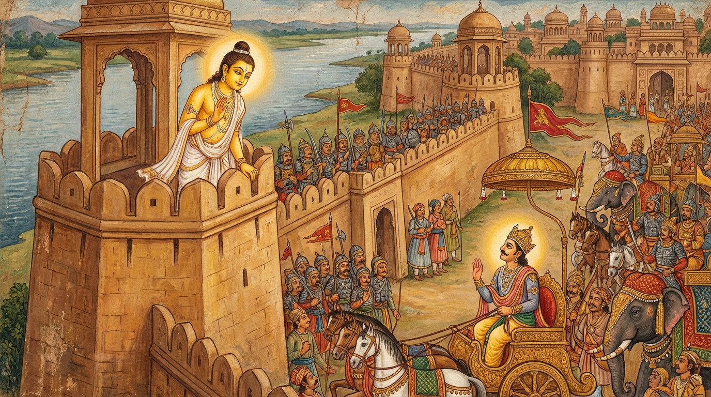

10. දෙවන පලායිත ජාතකය (230)
“ධජමං පරිමිතං” (ධජ අපමණ ය) යන මේ දේශනාව බුදුරජාණන් වහන්සේ ජේතවනාරාමයෙහි වැඩවසන සමයෙහි පලාගිය එක් පිරිවැජියෙකු අරබයා වදාළ සේක. මේ කථා වස්තුවෙහි ඒ පිරිවැජියා දෙව්රමට පිවිසියේය. ඒ අවස්ථාවෙහි බුදුරජාණන් වහන්සේ මහජනයා පිරිවරාගෙන, අලංකාර කරන ලද ධර්මාසනයෙහි වැඩසිටිමින්, මනෝශිලා තලාවක් මත සිංහනාද කරන සිංහ පොව්වෙකු මෙන් ධර්ම දේශනා කරන සේක. එම පරිබ්රාජකයා දසබලධාරීන් වහන්සේගේ බ්රහ්මයෙකුගේ ශරීරයට සමාන වූ රූප ශ්රීයක් ද, පුන්සඳ මඬලක ශෝභාවෙන් යුත් මුහුණ ද, රන් පටක් හා සමාන වූ නළල් තලය ද දැක, “කවරෙක් නම් මෙබඳු උත්තම පුරුෂයෙකු දිනන්නට සමත් වන්නේ ද?” යැයි සිතා, නැවතී පිරිස අතරට රිංගා පලා ගියේය. මහජනයා ඔහු ලුහුබැඳ ගොස් නවත්වාගෙන බුදුරජාණන් වහන්සේට ඒ පුවත සැලකළහ. බුදුරජාණන් වහන්සේ, “ඒ පිරිවැජියා දැන් පමණක් නොව පෙරත් මාගේ රන්වන් මුහුණ දැක පලා ගියේ ය” යි වදාරා අතීත කථාව ගෙනහැර දැක්වූ සේක.
අතීතයෙහි බෝසතාණන් වහන්සේ බරණැස් නුවර රාජ්යය කළහ. තක්සලා නුවර එක් ගන්ධාර දේශවාසි රජ කෙනෙක් විය. ඔහු “බරණැස් රාජ්යය අත්පත් කරගනිමි” යි සිතා සිව් රඟ සෙනඟ පිරිවරා අවුත්, නුවර වටලා, නුවර දොරටුව ළඟ සිටියේ තමන්ගේ බල වාහන දෙස බලා, “මෙතෙක් බල වාහන (පරදවා) දිනන්නට කවරෙකුට හැකි වන්නේ ද?” යැයි තමන්ගේ සේනාව වර්ණනා කොට පළමු ගාථාව පැවසී ය.
“ධජමපරිමිතං අනන්තපාරං, දුප්පසහං ධඞ්කෙහි සාගරංව;
ගිරිමිව අනිලෙන දුප්පසය්හො, දුප්පසහො අහමජ්ජ තාදිසෙනා”ති.
යන පළමු ගාථාව කීවේය.
“රථවල නගන ලද ධ්වජ අපමණ ය. මාගේ සේනාව කෙළවරක් නැත්තේ ය. මහමුහුද ඉක්මවා යාමට අසමත් කපුටාට මෙන් සතුරන් විසින් මෙය මැඩලිය නොහැක්කේ ය. පර්වත සෙලවීමට අසමත් සුළඟට මෙන් මාගේ සේනාව නුඹ විසිනුත් විනාශ කළ නොහැක්කේ ය. මම අද ඔබ වැනි අය විසින් මැඩලිය නොහැක්කෙක් වෙමි.”
එහි “ධජමපරිමිතං” යනු පළමුව මාගේ රථවල ඇති මොණර පිලෙන් කළ ධජ ආදියෙහි තබා ඔසවන ලද මේ කොඩි අප්රමාණ ය; බොහෝ ය; සිය ගණනක් ඇත. “අනන්තපාරං” යනු මාගේ ඇතුන් මෙපමණ ය, අසුන් මෙපමණ ය, රථ මෙපමණ ය, පාබල සේනාව මෙපමණ යැයි ගණනින් සීමා කළ නොහැකි බැවින් බල වාහන ද අනන්ත ය. “දුප්පසහං” යනු සතුරන් විසින් ඉවසා සිටීමට හෝ මැඩපවත්වන්නට නොහැකි ය. කෙසේ ද යත්? “ධඞ්කෙහි සාගරංව” යනු බොහෝ කපුටන් විසින් මුහුදේ වේගය යටපත් කිරීම් වශයෙන් හෝ මුහුදෙන් එතෙරට යෑමෙන් හෝ මැඩපවත්වන්නට අපහසු වන්නාක් මෙනි. මෙසේ ‘දුප්පසහ’ නම් වෙයි. “ගිරිමිව අනිලෙන දුප්පසය්හො” යනු සුළඟින් සෙළවිය නොහැකි හෙයින් පර්වතයක් යම් සේ මැඩලිය නොහැකි ද, එසේම මගේ මේ බලකාය අනිත් බලකායකින් මැඩලිය නොහැකි ය. “දුප්පසහො අහමජ්ජ තාදිසෙන” යනු මේ බලයෙන් යුක්ත වූ මම අද ඔබ වැන්නකු විසින් මැඩලිය නොහැකි ය. මෙය අට්ටාලයෙහි සිටි බෝසතුන් අරබයා කියයි.
ඉක්බිති බරණැස් රජු පුන්සඳ මඬල මෙන් සශ්රීක වූ තමන්ගේ මුහුණ පෙන්වා, “බාලය! නන් දොඩවන්න එපා. දැන් ඔබගේ බල සෙනඟ හා වාහන ද මත් වූ උතුම් ඇතෙකු බට වනයක් පොඩි කරන්නාක් මෙන් විනාශ කරන්නෙමි” යි තැති ගන්වා දෙවන ගාථාව වදාළේ ය.

“මා බාලියං විලපි න හිස්ස තාදිසං, විඩය්හසෙ න හි ලභසෙ නිසෙධකං;
ආසජ්ජසි ගජමිව එකචාරිනං, යො තං පදා නළමිව පොථයිස්සතී”ති.
යන දෙවන ගාථාව කීවේය.
“නුඹේ මෝඩකම් ප්රකාශ නොකරන්න. නුඹ වැනි පුරුෂයෝ රාජ්යය ලබා ගැනීමට සමර්ථයෝ නොවෙති. හුදෙක් නුඹ ක්ලේශ දාහයෙන් දවනු ලැබෙන්නෙහිය; මා වළකන්නට නුසුදුස්සෙහිය. තනිව හැසිරෙන ඇත් රජකු සමීපයට මෙන් නුඹ පැමිණෙන්නෙහිය. පාදයෙන් පොඩි කළ උණ වනයක් මෙන් හෙතෙම තා මැඩ සුණු විසුණු කෙරේ.”
එහි “මා බාලියං විලපි” යනු තමාගේ බාල බව (මෝඩකම) ප්රකාශ නොකරන්න. “න හිස්ස තාදිසං” යනු එබඳු කෙනෙක් නො වන්නේ ය. මෙයම හෝ පාඨය වෙයි. “මගේ බල වාහන අනන්ත ය” යි මෙලෙස තර්ක කරමින් රාජ්යය ගන්නට සමත් වූ එබඳු කෙනෙක් නම් නොවන්නේ ය; (එවැන්නෙක්) නැත යන අර්ථයයි. “විඩය්හසෙ” යනු ඔබ වනාහි තනිකරම රාග, දෝස, මෝහ, මාන යන කෙලෙස් දාහයෙන් දවනු ලබන්නෙහි ම ය. “න හි ලභසෙ නිසෙධකං” යනු මා වැන්නෙකු මැඩපවත්වා වළක්වන්නට සමත් අයෙකු ඔබ මෙතෙක් නොලබයි. අද ඔබ පැමිණි මඟින් ම පලා යවන්නෙමි. “ආසජ්ජසි” යනු සමීපයට එන්නෙහිය. “ගජමිව එකචාරිනං” යනු තනිව හැසිරෙන, මදයෙන් යුක්ත වූ උතුම් ඇතෙකු මෙන් ය. “යො තං පදා නළමිව පොථයිස්සති” යනු මදයෙන් යුක්ත (මත් වූ) යම් ඇතෙක් යම් සේ පාදයෙන් උණ ගස් පොඩි කර දමයි ද, හොඳින් කුඩු කර දමයි ද එසේ ඒ ගන්ධාර රජ පෙළන්නේ ය. ඔබ ඔහු (බරණැස් රජ) ළඟට එන්නෙහි යැයි තමා අරබයා කීවේ ය.
මෙසේ තර්ජනය කරන්නා වූ මොහුගේ කථාව අසා ගන්ධාර දේශයේ රජතුමා ඉහළ බලන්නේ, රන් පටක් හා සමාන වූ මහ නළල දැක, තමන් අල්ලා ගනු ඇතැයි බියට පත්ව, නැවතී පලා යන්නේ සිය නගරයට ම ගියේ ය.
බුදුරජාණන් වහන්සේ මේ ධර්ම දේශනාව ගෙනහැර දක්වා ජාතක කථාව නිමවා වදාළ සේක. “එකල ගන්ධාර රජ වූයේ මේ පලා ගිය පිරිවැජියා විය. බරණැස් රජ වනාහි මම ම වූවෙමි” යි වදාළ සේක.
දසවන දුතියපලායිත ජාතක වර්ණනාව යි.
අටවැනි කාසාව වර්ගය නිමියේ ය.
එහි උද්දානය (මාතෘකා ගාථාව) මෙසේය:
කාසාව ජාතකය, චූළනන්දිය ජාතකය, පුටභත්ත ජාතකය ද, කුම්භිල ජාතකය ද, ඛන්තිවණ්ණ ජාතකය ද, කෝසිය ජාතකය ද, ගූථපාණ ජාතකය ද, කාමනීත ජාතකය ද, පලායිත ජාතක දෙක ද (යන මේවායි).